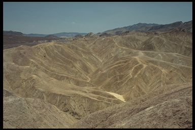

| Home | Kontakt | Steckbrief |
| Wandern/Trekking |
| Klettern/Klettersteige |
| Kanu |
| Fahrradtouren |
|
| Rucksack-Reisen |
| Touren mit Kindern |
| Wissenswertes |
Tourenbeschreibung USA SüdwestenEinleitungDiese Tour habe ich 1996 mit dem Veranstalter mittlerweile nicht mehr existenten Reiseveranstalter Suntrek Tours unternommen.Die Tour startete in San Francisco und ging über den Highway No. 1 von Monterey nach Santa Barbara und weiter nach Los Angeles. Von dort nach San Diego und nach einem kurzen Abstecher in Tijuana (Mexiko) über Teile der Route 66 zum Grand Canyon. Dann weiter übers Monument Valley, Lake Powell, Bryce Canyon, Red Canyon, Zion nach Las Vegas. Weiter durch Death Valley und Yosemite über Sacramento zurück nach San Francisco. Diese 3 wöchige Tour berührte nahezu alle interessanten Nationalparks des Südwestens und gab einen Einblick, wo man eventuell länger verweilen sollte. Der Reiseveranstalter stellte das Fahrzeug, das für 14 Personen ausgelegt war, den Reiseleiter und Fahrer und die komplette Campingausrüstung. Die Eintritte für die Nationalparks und einige Vergnügungsparks waren ebenfalls eingeschlossen. An den verschiedenen Stops hatte man die Wahl zwischen mehreren Aktivitäten (Wanderungen, Bootsfahrten, Reiten, etc.) Die TourSan Francisco - Golden Gate Bridge Ich bin drei Tage vor Tourbeginn von Frankfurt über Fort Lauderdale und Dallas nach San Francisco geflogen. Der Flug war relativ günstig aber dauerte durch die Routenführung ca. 16 Stunden, weshalb ich ziemlich fertig in San Francisco ankam. Als Hotel hatte ich das Ramada an der Market Street gebucht, da es ziemlich zentral lag und die Tour von dort starten sollte. Nachdem sich alle Reiseteilnehmer im Hotel in San Francisco getroffen hatten, wurden wir den Tourbegleitern zugeteilt. Am nächsten morgen ging es dann per Van nach Monterey und von dort über den sehenswerten Highway No. 1 direkt an der Küste entlang Richtung Los Angeles. Kurz vor Santa Barbara übernachteten wir auf einem vorgebuchten Campingplatz. Von Santa Barbara ging es weiter nach Los Angeles, wo wir uns in einem Hotel nahe des Airports einquartierten. In Los Angeles besuchten wir die Universal Studios, was ich uneingeschränkt weiterempfehlen kann auch wenn man an den Attraktionen sehr lange anstehen muß. Am nächsten Tag besuchten wir Disneyland. Da es ein Sonntag war, war Disneyland etwas überfüllt und ich halte den Besuch auch für verzichtbar. Sehr schön ist der Strand von Venice Beach wenn auch etwas viele Ölklumpen den Strand zierten. Von Los Angeles ging es nach San Diego, dort besuchten wir Sea World mit seinen spektakulären Shows.
Von San Diego machten wir einen kurzen Abstecher über die mexikanische Grenze nach Tijuana. Interessant ist es dort zu beobachten, wie viele amerikanische Jugendliche sich dem in den USA verpönten Alkoholgenuß hingeben. Tijuana ist eigentlich ein mexikanischer Zoo und eventuell mit der Düsseldorfer Altstadt zu vergleichen. Weiter ging es Richtung Osten nach Yuma. Das Klima wurde deutlich wüstenähnlicher und zum ersten Mal trafen wir auf den Colorado River, der in Yuma allerdings nur noch ein kleiner Back ist. Übernachtet haben wir weiter nördlich nach einer nahezu unendlichen Wüstenetappe am Wassersportzentrum Lake Havazu. Dort befindet sich die aus London herübergeschiffte und wieder zusammengesetzte London Bridge Einen Tag verbrachten wir damit in den Grand Canyon, Arizonas bedeutendste Natursehenswürdigkeit, abzusteigen. Man konnte entweder die 1600m bis zum Colorado River absteigen oder nur bis zu einem Aussichtspunkt 300m oberhalb des Colorados. Die Hinweise der Ranger bezüglich der Trinwassermenge sollte man ernst nehmen und unter zwei Litern den Abstieg nicht wagen.
Wir sind morgens um 6 Uhr gestartet und haben 3 Stunden für die 1300m hinunter benötigt. Für den Rückweg brauchten wir 6 Stunden und nahmen die 4 eingerichteten Wasserstellen dankbar an. Der Muskelkater am nächsten Tag war so stark, daß wir aller herumliefen wie Cowboys, denen man die Pferde gestohlen hat.
Als nächstes besuchten wir das Monument Valley, bekannt aus der Marlboro Reklame. Dort mieteten wir von den Navahos Pferde und ritten zu einem Campplatz inmitten des Reservats.
Für mich war das der erste Kontakt zum Fortbewegungmittel Perd und dann auch noch direkt auf einem Indianersattel. Zuerst dachte ich mir nichts dabei vier Stunden zu reiten, da dabei ja das Pferd die Arbei macht aber da hab ich mich doch etwas getäuscht. Nach 2 Stunden waren sämtliche Atemöffnungen voll rotem Staub, der Hals ausgetrocknet und ich spürte Muskeln, wo meiner Meinung nach keine waren.
Nach einem von den Indianerinnen zubereiteten Abendessen gab es noch Lagerfeuerkaffee und ich schlief diese Nacht wie ein Toter. Vom Monument Valley sind wir dann zum Lake Powell gefahren, einem riesen Wassersportzentrum mitten in der Wüste, daß durch das aufstauen des Colorado Rivers bei Page entstanden ist. Dort haben wir uns Motorboote und Wasserskier gemietet, was in den USA ohne Qualifikation möglich ist. Kreditkarte reichte. Danach fuhren wir zum Bryce Canyon, der sich durch seine skulturartigen Erosionsgebilde auszeichnet. Die normale Touristenroute durch den Canyon beginnt am Sunset Point und endet am Sunrise Point. Wir sind aber etwas oberhalb eingestiegen, wodurch man einen längeren Weg durch den Canyon hat aber auch einen wesentlichen besseren Blick auf die Szenerie.
Weiter ging es zum Zoin National Park, an dem zwei Freizeitmöglichkeiten zur Auswahl standen. Entweder eine Wanderung zum Angels Landing, einem kleinen Platz hoch über dem Tal mit spektakulärem und für amerikanische Versicherungsverhältnisse nahezu waghalsigem Anstieg, oder eine Wanderung durch eine enge Schlucht mit 400 Meter hohen senkrechten Wänden, bei der man allerdings ständig durch den Fluß watet.
Ich endschied mich für den Angels Landing und der Blick entschädigte für alle Mühen.
Von Zion ging es in die Spielerstadt Las Vegas, wo wir abends ankamen und den ganzen nächsten Tag verbrachten. Beeindruckend aber verzichtbar. Nur Rentner, die einarmige Banditen fütterten. Aus Las Vegas heraus führen wir zum tiefsten Punkt der USA, dem Death Valley mit den Sanddünen von Zabriskie Point. Der gleichnamige Spielfilm ist sehr zu empfehlen. 
Der gleichnamige Spielfilm ist sehr zu empfehlen. Die Temperatur betrug dort angenehme 51°Celsius. Es war so heiß und trocken, daß der Schweiß sofort verdunstete und die Haut sich trocken anfühlte.
Nach einem kurzen Zwischenstop am Mono Lake, dessen skurile Salzgebilde durch die beständige Wasserentnahme von Los Angeles nun sichtbar an Land stehen, fuhren wir weiter ins Yosemite Valley einem Eldorado für Freeclimber. Dort gibt es die berühmten Big Walls am El Capitan und am Halfdome.
Eigentlich war dort die Besteigung des Halfdomes über den Normalweg geplant, was wir aber Dank eines Felssturzes nicht machen konnten. Alternativ sind wir eine Route auf den nebenstehenden Wasserfall hinaufgegangen.
Oben haben wir im Fluß gebadet, wobei man allerdings aufpassen muß, nicht über die Kante gespült zu werden. Vom Felsen rechts des Wasserfalls hatte man einen schönen Blick auf den Halfdome und das ganze Yosemite Valley.
Vom Yosemite Valley ging es über Sacramento zurück nach San Francisco, wo die Teilnehmer wieder in alle Himmelsrichtungen verschwanden. Im Rückblick würde ich die Tour als Einstiegstour jederzeit wieder machen. Sie bietet einen schönen Überblick über die Nationalsparks. An einigen Stellen hätte ich mit Sicherheit länger verweilen können. Z.B. schwebt mir noch eine Durchquerung des Grand Canyon vom Northrim zum Sourtrim vor und der Zion National Park bietet noch eine Vielzahl weiterer schöner Routen.
|